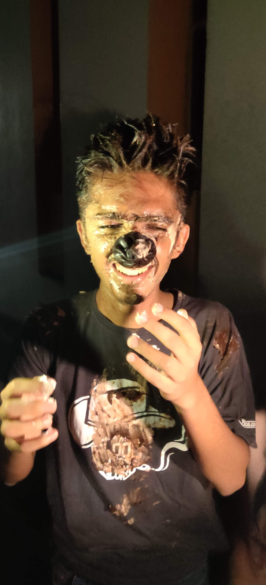

Ye banda dikhne mein seedha hai
Par iski asli shakal dekho
Ye hai bajrang dal ka secret head. Ek dhoka isne khaya mini se isliye ab kisi ko khush nahi dekh sakta ye.
Jab ye siddharth and doosro ke bandi chhudwa kar cuding karne lagta hai
Wishes that the whole world remains single
When someone mentions miloni 
What people call him (Who are they?)
Nissu Yaya (Kaushal),
Chumpututive Cuder (Akshat),
Chwuss (Sakshi),
Bae (The people jinke baare mein aage ke chapters mein likha hua hai)